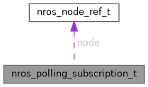

|
nros C API
Lightweight ROS 2 client for embedded real-time systems
|
#include <nros_generated.h>

Data Fields | |
| uint64_t | _opaque [SUBSCRIPTION_OPAQUE_U64S] |
| struct nros_node_ref_t | node |
| enum nros_subscription_state_t | state |
A subscription the CALLER drains, with no executor (phase-487 W1).
The C counterpart of C++'s nros::PollSubscription<M> and Rust's create_polling_subscription. Nothing dispatches it, so it has no arena slot and keeps its subscriber in its own storage: _opaque holds a RawSubscription<MESSAGE_BUFFER_SIZE> (subscriber, receive buffer and event registrations) from nros_polling_subscription_init* until nros_polling_subscription_fini. Zero-initialised is UNINITIALIZED.
It was the NROS_SUBSCRIPTION_STATE_POLLING state of nros_subscription_t until phase-487, which made every dispatched subscription carry this storage unused.
| uint64_t nros_polling_subscription_t::_opaque[SUBSCRIPTION_OPAQUE_U64S] |
Inline storage for the RawSubscription. Internal: treat as opaque.
| struct nros_node_ref_t nros_polling_subscription_t::node |
The node the subscriber was created on, kept so fini can refuse a teardown after the node's (NROS_RET_STALE_NODE).
| enum nros_subscription_state_t nros_polling_subscription_t::state |
Current state: UNINITIALIZED, INITIALIZED (subscriber live) or SHUTDOWN.